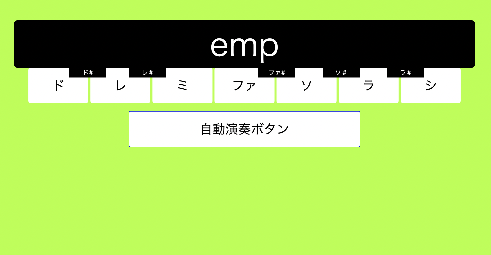
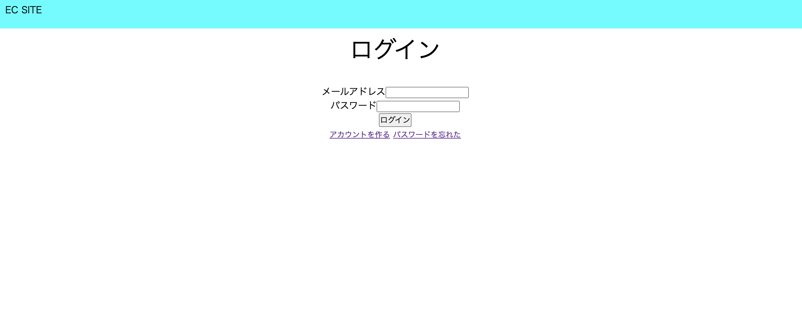

自己紹介 Self introduce
私の名前は村瀬 尊好です。北海道出身で、現在はディーキャリアITエキスパート札幌オフィスにて、プログラミングの学習に取り組んでいます。どうぞよろしくお願いします。

スキルSkills
- HTML/CSS
- PHP/MySQL
- JavaScript
実装サンプル sample
画像ギャラリー

宇宙飛行士と月
幻想的な色彩の月と雲の前に、宇宙飛行士が立っています。

朝日と石
積み重ねられた石を、朝日が照らしています。

鏡のような湖
空と海がどちらかわからなくなるような、鏡のような湖です。

ハートの風船
青空をバックに、たくさんの色とりどりのハートの風船が浮いています。
訓練課題
JavaScript課題

これは疑似的なピアノアプリです。鍵盤をクリックするとその音階が上に表示されます。"自動演奏ボタン"を入力すれば"チューリップ"または"きらきら星"の順で音階が表示されます。
感想ですが、コードを見返してみてPromiseをうまく理解できてないな、と感じました。"自動演奏ボタン"にはn秒待つ、という処理があるのですが、そこでsetTimeOutを用いています。今思うとsetTimeOutではなく他に方法はあったのではないか、と思っています。
PHP課題
疑似的なECサイトです。難易度はDキャリアの教科書を全て把握できていれば決して高いものではありませんでした。だからといって手を抜くことはなく、最大限美しく書いたつもりです。ご精査ください。
WordPress課題

疑似的な企業のサイトです。WordPressではWordPressで指定されたhtmlファイルを用意しておけば、WordPressが読み取ってくれる。ということまでは理解できました